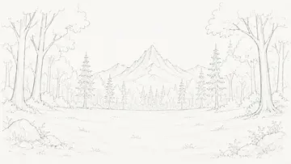

Nature Seed ارسم مسارًا. اجمع بينهما.
لغز فيزيائي مجاني تحلّه بالرسم، ويمكنك لعبه في المتصفح. ارسم خطًا بحبر محدود فيتحول إلى منحدر أو جسر أو نقطة استقبال توصل Water Drop إلى Seed. وكل مستوى تحلّه يعيد مشهد غابة بالألوان المائية.
صدرت في 18 سبتمبر 2026 مع 100 مستوى ونجوم لكفاءة الخطوط وتقدّم محفوظ. وهي مجانية على itch.io وGame Jolt وindiexpo؛ أما نسخة iOS وAndroid فهي الهدف ولم تصل إلى متاجر التطبيقات بعد.
رسمارسم بحبر محدود
ربطأوصِل Water Drop إلى Seed
تفتّحأعد الغابة إلى الحياة
داخل الإصدار الحالي
ما ترسمه يصبح جزءًا من المستوى.
كل خط تثبّته يصبح جسمًا صلبًا بتصادمات حقيقية، وتتفاعل معه Water Drop وSeed. الحبر وعدد الخطوط كلاهما محدود، لذا فشكل الخط مهم.
حالة الإصدار تم إصداره في 18 سبتمبر 2026

نظرة عامة على اللعبة
لغز مريح تحلّه بالرسم، هدفه أن تلتقي شخصيتان صغيرتان.
الفكرة
ارسم مسارًا، واجمع Water Drop وSeed، وشاهد الرسم الهادئ يعود إلى الحياة.
تشغيل الإصدار
100 مستوى قابل للعب مع الرسم باللمس ونجوم لكفاءة الخطوط وتقدّم محفوظ بين الجلسات.
الجمهور
لاعبون يحبون الألغاز الهادئة والفيزياء الخفيفة وموضوعات الطبيعة وجلسات الهاتف المحمول الخالية من التوتر.
الحالة
صدرت في 18 سبتمبر 2026 ويمكن لعبها مجانًا في متصفحك. النسخة المحمولة هي الهدف، ولم تصل إلى متاجر التطبيقات بعد.
المميزات
ماذا تفعل في Nature Seed.
مسارات فيزيائية تُحلّ بالرسم
يبدأ كل لغز بتضاريس وSeed وWater Drop. ويتحول خط اللاعب إلى المنحدر أو الجسر أو نقطة الاستقبال التي تجمع بينهما.
استجابة فيزيائية واضحة
تتحرك Water Drop وSeed بطرق يمكنك تتبعها، لذا تُريك المحاولة الفاشلة ما يجب تغييره.
مكافآت استعادة الغابة
أنهِ المستوى ليمتلئ المشهد المرسوم بالألوان وبأشجار تنمو.
مستويات قصيرة ورسم باللمس
المستويات قصيرة وترسم باللمس، وهذا يناسب الجلسات السريعة على الهاتف.
حلقة اللعب
طريقة لعب Nature Seed
- الخطوة 01اقرأ الرسم
ابحث عن المنحدرات والفجوات والعوائق، وعن أكثر الطرق أمانًا للربط بين الشخصيتين.
- الخطوة 02ارسم الخط
ارسم خطك. يتحول الخط إلى منحدر أو دليل أو نقطة استقبال للشخصيات.
- الخطوة 03ثبّت وراقب
ثبّت الخط وراقب ردّ فعل الشخصيات. ستلاحظ ما نجح وما لم ينجح.
- الخطوة 04أزهِر أو حسّن
إذا وصلت Water Drop إلى Seed، تعود الغابة. وإذا أخطأتا، فأعد الرسم بما تعلّمته للتو.
قصة / عالم
غابة مرسومة بالقلم تنتظر الماء.
بدأت Nature Seed كلغز فيزيائي يُحلّ بالرسم، يدور حول إعادة الحياة إلى شيء هش بدلًا من دفع الأجسام نحو بعضها.
الشخصيات هي Seed وWater Drop وغابة تعود من الرسم إلى الألوان أثناء لعبك. كل لغز مهمة صغيرة: ادرس الأرض، وارسم مسارًا، وساعد الماء على الوصول إلى شيء يمكنه أن ينمو.
- اتجاه التصميم
- فيزياء هادئة واستعادة ملموسة
- الشخصيات
- Water Drop وSeed
- التفاعل
- الرسم باللمس
- مكافأة الإتقان
- الحل بخط واحد يمنح ثلاث نجوم
نظرة سريعة
مجانية في المتصفح اليوم، والهدف هو الهاتف المحمول.
تحميل المواد
مواد الصحافة وصنّاع المحتوى للعبة Nature Seed
معاينات WebP للتغطية الصحفية ومراجعة الناشرين ومراجع صفحات المتاجر. ملفات المصدر بدقتها الكاملة متاحة عند الطلب.
العلامة التجارية والشخصيات
 Water Dropالشخصية الزرقاء التي عليها الوصول إلى Seed.
Water Dropالشخصية الزرقاء التي عليها الوصول إلى Seed.
 شخصية Seedالشخصية الخضراء التي تحاول Water Drop الوصول إليها.
شخصية Seedالشخصية الخضراء التي تحاول Water Drop الوصول إليها.
 نمو الشجرةالشجرة التي تنمو بعد الحل.
نمو الشجرةالشجرة التي تنمو بعد الحل.
 قائمة الغابةخلفية القائمة الرئيسية.
قائمة الغابةخلفية القائمة الرئيسية.
 خلفية اللعبخلفية المستوى مع منطقة لعب فارغة.
خلفية اللعبخلفية المستوى مع منطقة لعب فارغة.
مستويات تخطيطية تُحلّ بالرسم
 مستوى الرسم 01رسم أولي قبل الحل.
مستوى الرسم 01رسم أولي قبل الحل.
 مستوى الرسم 02رسم أولي قبل الحل.
مستوى الرسم 02رسم أولي قبل الحل.
 مستوى الرسم 03رسم أولي قبل الحل.
مستوى الرسم 03رسم أولي قبل الحل.
 مستوى الرسم 04رسم أولي قبل الحل.
مستوى الرسم 04رسم أولي قبل الحل.


مستوى الرسم 05رسم أولي قبل الحل. مستوى الرسم 06رسم أولي قبل الحل.
مستوى الرسم 06رسم أولي قبل الحل.
 مستوى الرسم 07رسم أولي قبل الحل.
مستوى الرسم 07رسم أولي قبل الحل.
 مستوى الرسم 08رسم أولي قبل الحل.
مستوى الرسم 08رسم أولي قبل الحل.
 مستوى الرسم 09رسم أولي قبل الحل.
مستوى الرسم 09رسم أولي قبل الحل.
 مستوى الرسم 10رسم أولي قبل الحل.
مستوى الرسم 10رسم أولي قبل الحل.
مشاهد اللغز المستعادة
 المستوى المستعاد 01تُستعاد بعد الحل.
المستوى المستعاد 01تُستعاد بعد الحل.
 المستوى المستعاد 02تُستعاد بعد الحل.
المستوى المستعاد 02تُستعاد بعد الحل.
 المستوى المستعاد 03تُستعاد بعد الحل.
المستوى المستعاد 03تُستعاد بعد الحل.
 المستوى المستعاد 04تُستعاد بعد الحل.
المستوى المستعاد 04تُستعاد بعد الحل.
 المستوى المستعاد 05تُستعاد بعد الحل.
المستوى المستعاد 05تُستعاد بعد الحل.
 المستوى المستعاد 06تُستعاد بعد الحل.
المستوى المستعاد 06تُستعاد بعد الحل.
 المستوى المستعاد 07تُستعاد بعد الحل.
المستوى المستعاد 07تُستعاد بعد الحل.
 المستوى المستعاد 08تُستعاد بعد الحل.
المستوى المستعاد 08تُستعاد بعد الحل.
 المستوى المستعاد 09تُستعاد بعد الحل.
المستوى المستعاد 09تُستعاد بعد الحل.
 المستوى المستعاد 10تُستعاد بعد الحل.
المستوى المستعاد 10تُستعاد بعد الحل.
الجدول الزمني للتطوير
الجدول الزمني لتطوير Nature Seed
- صيف 2025المفهوم الأصلي
بدأت Nature Seed كفكرة للغز هادئ للهاتف المحمول عن التواصل وإعادة الحياة إلى الطبيعة.
- أكتوبر 2025هوية Seed وWater Drop
أنهينا وثيقة التصميم واستقررنا على Seed وWater Drop كشخصيتين رئيسيتين.
- ديسمبر 2025بداية التطوير
خططنا للمستويات الأولى على الورق، ثم بدأنا البناء، وأصبحت الأنظمة الأساسية قابلة للعب.
- فبراير 2026مراجعة كبيرة أولية للمستويات
منحتنا مراجعة أولية واسعة للمستويات أساسًا للصقل والموازنة لاحقًا.
- مارس-أبريل 2026مراجعة الميكانيكا والمستويات
راجعنا ميكانيكيات إضافية ومستويات أولية، ثم بسّطناها أو أعدنا العمل عليها للحفاظ على هدوء اللعبة.
- يوليو 2026مراجعة النموذج الأولي العمودي
جمع إصدار يوليو الرسم بحبر محدود ونجوم الكفاءة والتقدّم المحفوظ وتوليد خطوط مستقرًا في حلقة لعب واحدة.
- 18 سبتمبر 2026إصدار Nature Seed
صدرت اللعبة باسم Nature Seed مع 100 مستوى ونجوم لكفاءة الخطوط وتقدّم محفوظ ومشاهد استعادة بالألوان المائية.
الأسئلة الشائعة حول Nature Seed
أسئلة شائعة حول Nature Seed
هل Nature Seed مجانية؟
نعم. يمكنك لعبها مجانًا في متصفحك على itch.io وGame Jolt وindiexpo.
هل صدرت Nature Seed بعد؟
نعم. صدرت في 18 سبتمبر 2026 مع 100 مستوى. نسخة iOS وAndroid هي المنصة المستهدفة ولم تصل إلى متاجر التطبيقات بعد.
ما نوع لعبة Nature Seed؟
لغز فيزيائي مريح تحلّه بالرسم. الخطوط التي ترسمها تتحول إلى أجسام صلبة تساعد Water Drop وSeed على اللقاء.
كيف تلعب Nature Seed؟
اقرأ التضاريس، وارسم مسارًا بحبرك المحدود، ثم شاهد الشخصيتين وهما تتفاعلان. إذا أخطأتا فأعد الرسم. كلما قلّت الخطوط زادت النجوم، وخط واحد يمنحك ثلاثًا.
من يصنع Nature Seed؟
WillowinWorlds، استوديو مستقل يصنع ألعاب ألغاز وأركيد للهاتف المحمول.
هل يمكنني استخدام مواد Nature Seed الصحفية؟
نعم، للصحافة ومراجعة الناشرين ومراجع المتاجر. تبقى الملفات المصدرية خاصة ما لم تطلبها منا.
مدونة تطوير Nature Seed
ماذا تغير ومتى
- إصدار Nature Seed
صدرت Nature Seed بعنوانها النهائي كلعبة متصفح مجانية على itch.io وGame Jolt وindiexpo، مع 100 مستوى ونجوم لكفاءة الخطوط وتقدّم محفوظ.
- مراجعة الاستعادة والاستقرار للمستوى 2
يستخدم المستوى 2 الآن زوج خلفياته الإنتاجية، مع إعداد أكثر موثوقية للمستوى وفحوصات تصادم واستجابة إكمال أدق.
- يوليو 2026بناء قابل للعب
جمع إصدار يوليو بين الرسم بحبر محدود ونجوم الكفاءة والتقدّم المحفوظ واستجابة الاستعادة.
- أبريل 2026مراجعة إعادة العمل على المستوى
بعد مراجعة داخلية أعدنا العمل على عدة مستويات أولية لتقليل التعقيد وجعلها أسهل قراءةً على الهاتف.
- مارس 2026مراجعة الميكانيكا
اختبرنا ميكانيكيات إضافية وأزلنا التي جعلت المستويات تبدو مزدحمة.
- فبراير 2026مراجعة كبيرة أولية للمستويات
صارت مراجعة أولية واسعة للمستويات أساسًا للصقل والموازنة لاحقًا.
- ديسمبر 2025بداية التطوير
انتقلت الأنظمة الأساسية من وثيقة التصميم إلى شكل قابل للعب.
- صيف 2025المفهوم الأصلي
كانت النسخة الأولى من Nature Seed فكرة لغز هادئ عن التواصل وإعادة الحياة إلى الطبيعة.